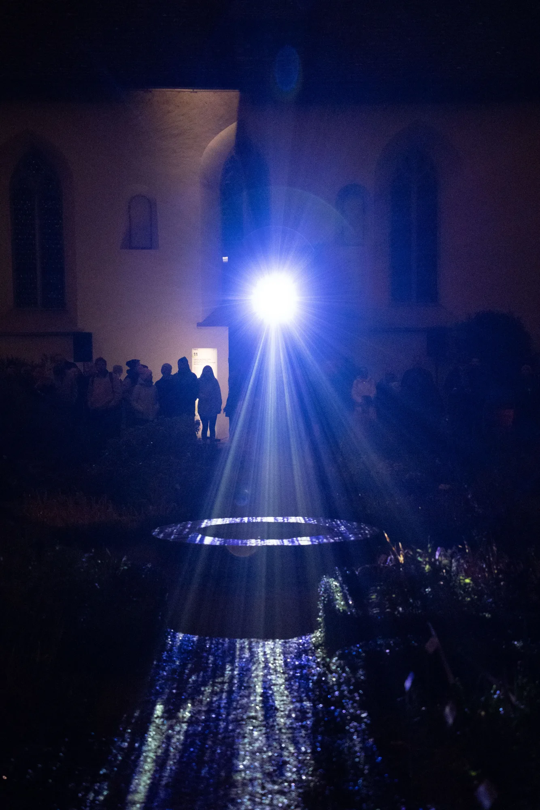
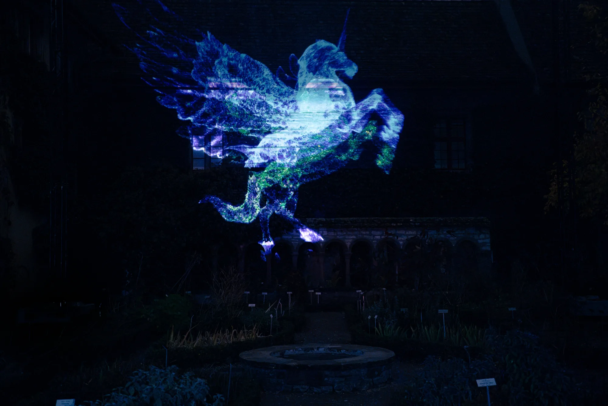
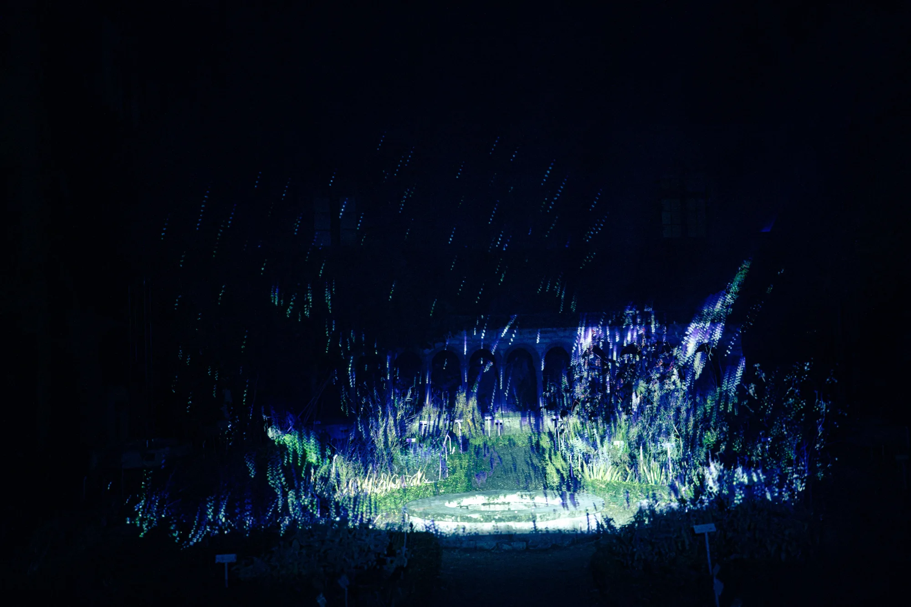
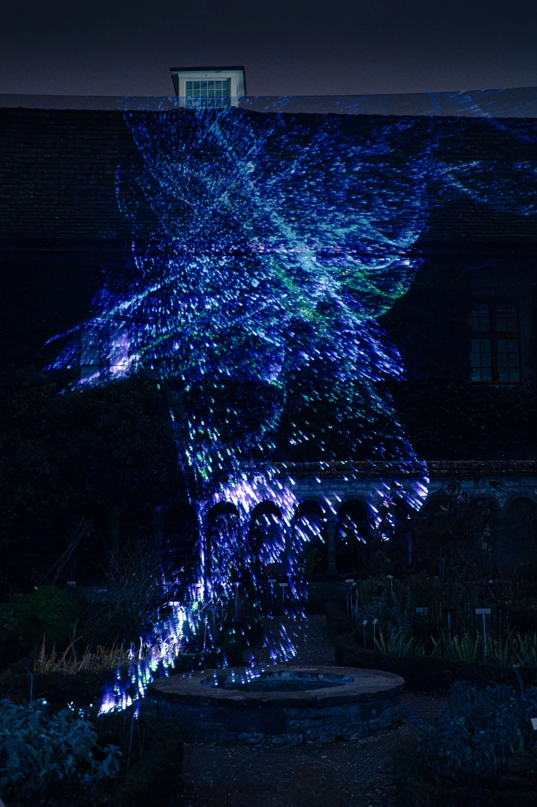

Zwischenwelten
Audiovisual Installation
Commissioned by Rhyality Immersive Art Hall for the Rheinlicht Festival in Schaffhausen, Zwischenwelten transforms the nocturnal herb garden of the Kloster Allerheiligen into a poetic world in between. Fleeting figures of light drift silently through the plants, as if they had always belonged to this place. They merge with herbs, shadows and the night air into a living play of light: a brief state of suspension between nature and dream, where the real and the imaginary touch. A luminous invitation to lose oneself in the in-between.
- Rheinlicht Festival
- Light Art
- Site-Specific
Type
Light Festival Project
Rheinlicht Festival, Schaffhausen
Location
Herb Garden, Kloster Allerheiligen, Schaffhausen
Roles
Concept, Video Art, Sound Design




Credits
Concept, Video Art, Sound Design:
Jonas Wolter
Commissioned by:
Rhyality Immersive Art Hall
Tech Setup:
Okula
Festival:
Rheinlicht Festival 2026, Schaffhausen